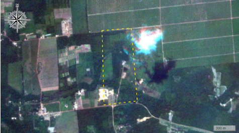

haCARthon · DESAFIO 3
jornada navegável · Téo
ExpliCAR
Notificação → tom → conversa que se ajusta → resumo. Tudo é clicável.
ETAPA
{{ stepLabel }}
Inicio
9:41
Bom dia,
seu Raimundo.
seu Raimundo.
O que você precisa entender hoje?
9:41
ExpliCAR
online
Chegou uma carta
do SICAR.
do SICAR.
Três páginas de siglas e artigos. Calma — a gente traduz isso junto.
SISTEMA NACIONAL DE
CADASTRO AMBIENTAL RURAL
CADASTRO AMBIENTAL RURAL
Art. 12, §4º
RL
APP
SUSPENSO
Aponte a câmera para o QR code que veio na carta.
9:41
lendo o código da carta…
{{ scanHint }}
Achei sua terra
SICAR

CAR Nº PA-1506…-A1B2
Sítio Boa Esperança
Bom dia, seu Raimundo. Confere os dados da sua terra?
MUNICÍPIO
Altamira / PA
BIOMA
Amazônia Legal
MÓDULOS FISCAIS
3,2 · pequena
CURSO D'ÁGUA
Riacho Seco · 6 m
3 pendências no seu CAR. Calma — quase nada disso é multa. São ajustes de cadastro.
O QUE PRECISA OLHAR
{{ p.titulo }}
{{ p.resumo }}
Téo · técnico do CAR
explica difícil em palavra fácil
Antes da gente começar, seu Raimundo — como o senhor prefere que eu explique?
O senhor pode mudar quando quiser — é só dizer "não entendi" ou "quero saber mais".
Téo · técnico do CAR
tom: {{ tomLabel }}
SUAS PENDÊNCIAS
{{ resolvedCount }} de 3 resolvidas
{{ m.text }}
{{ m.text }}
{{ m.lead }}
EXPLICAÇÃO
{{ m.levelName }}
{{ b.label }}
{{ ln }}
{{ m.refs }}
{{ ln }}
RESUMO LEGAL · SÓ DA SUA TERRA
Olha como a conta cai pra sua realidade, seu Raimundo:
{{ st.big }}
{{ st.tag }}
{{ st.txt }}
{{ m.close }}
Seu resumo
online
As 3 têm caminho,
seu Raimundo.
seu Raimundo.
O que travava há tempo virou três passos. Leve no bolso.
{{ f.n }}
{{ f.titulo }}
{{ f.acao }}
{{ f.base }}
Salvo no aparelho — abre no sítio, no caminhão, longe do sinal.
OUVINDO · OmniVoice
{{ audioTitle }}
{{ audioCur }}{{ audioDur }}
1×
online